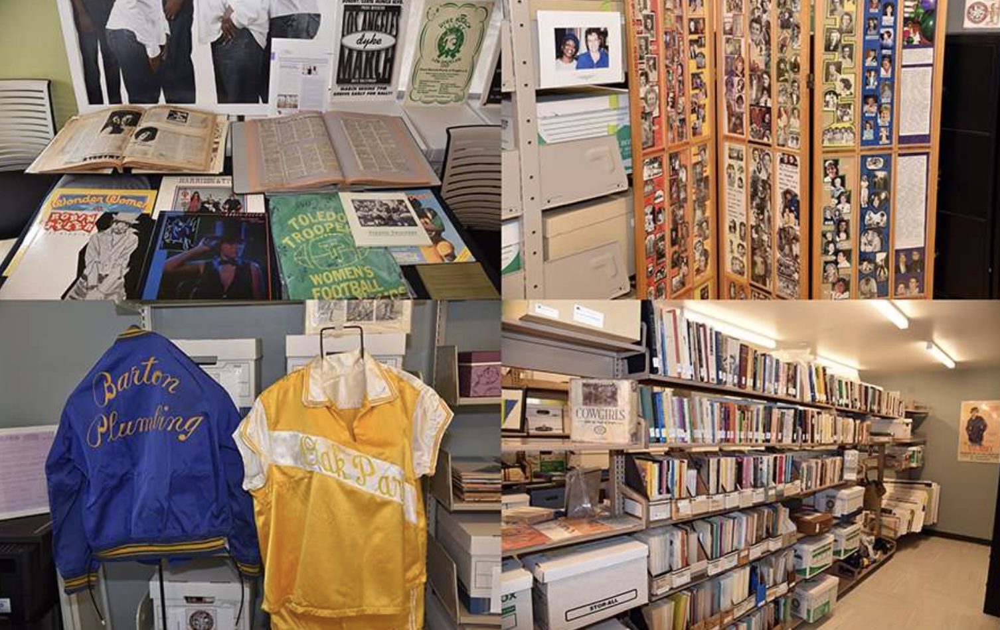

At the June L Mazer Lesbian Archives, I am working on building the Digital Asset Management system's interface using Omeka and Reclaim Hosting, as well as the content by creating and standardizing metadata for digital collections. I scan and process physical materials including ephemera, printed materials, and visual art, categorizing and uploading them to the digital repository. My work ensures long-term accessibility and discoverability while handling sensitive archival materials ethically.

Explore the June L Mazer Lesbian Archives' digital collection, featuring archival materials made accessible through Omeka.
View the Mazer Digital Collection →I developed an illustrated workflow guide documenting the process of preparing archival metadata and digital images for batch import into Omeka. The guide outlines the movement of collection data from Airtable through Google Sheets and CSV preparation, image uploads through Reclaim Hosting, metadata mapping, and final item ingestion through Omeka's CSV Import plugin. It also documents troubleshooting and quality-control considerations to support a repeatable workflow for future volunteers and staff.
The guide serves as practical documentation for digital collection processing, metadata organization, and repository workflows.
View or download the Omeka Workflow Guide →